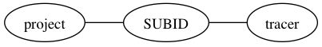
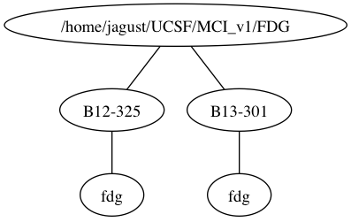
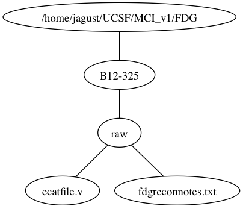

Structure of Data Directory¶
Data should be set up as such:
<project_dir> / <SUBID> / <tracer>

For Example

A raw directory can go under the <SUBID> folder

Converted frames should go in the <SUBID> / <tracer> directory
![digraph frame_example {
node [shape=box]; project_dir;
node [shape=ellipse]; f1 [label="B12-325_FDG_frame0001.nii.gz"]; f2 [label="B12-325_FDG_frame0002.nii.gz"]; f3 [label="B12-325_FDG_frame0003.nii.gz"]; f4 [label="B12-325_FDG_frame0004.nii.gz"]; f5 [label="B12-325_FDG_frame0005.nii.gz"]; f6 [label="B12-325_FDG_frame0006.nii.gz"];
project_dir -> "B12-325" -> "fdg" -> f1
"fdg" -> f2
"fdg" -> f3
"fdg" -> f4
"fdg" -> f5
"fdg" -> f6
rankdir = "LR"
}](_images/graphviz-11ea4034f0042db552a35803399eab4a8e093e56.png)
Note that this layout allows you to BOTH anatomy (MRI) directed processing and non-anatomy processing in the same directory